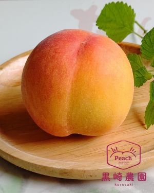

完熟収穫で糖度の高いこだわりの桃
当農園の桃栽培で特徴的なところは、あえて小玉を目指しています。小玉を目指すと結果として核割れ（種が割れる）が防げるという考え方です。
特に早生と呼ばれる早い時期に出る6月の桃は、果汁が多いけれども小玉サイズで糖度は低い桃。最盛期の7月以降の桃品種と比べると味の面でも、見た目の面でもかないません。 大玉に仕上げたほうが一般的には高い価格で販売できるので、狙って小玉を作る人はほとんどいません。
当農園ではその小玉桃をひときわ小さく作っておりますが、実は大人気商品です。
写真は6月上旬の桃ですが、ぱっと見が”特大の梅”かと見間違えるほど。しかし、地元の直売所のほかギフトとしてもリピートが絶えません。収穫のお知らせは＜News＞で告知いたしますので、ご確認くださいませ。
ぜひ、大切な方への贈り物やふるさと納税のご利用など、心よりお待ちしております。
黒崎農園 代表
黒脇 充
店舗情報
| 住所 | 〒709-0835 岡山県赤磐市西中817（地図） |
|---|---|
| 電話番号 | 086-955-0447 |
| 営業時間 | 10:00～17:00 |
| 定休日 | 土・日・祝日 |
| ご注文 | ご注文は、うまいもんドットコムより受け付けております。 |
| ご注文 | ご注文は、お問い合わせフォームより受け付けております。 ※フォームからのご予約にはお時間がかかる場合がございますので、ご了承ください。 |